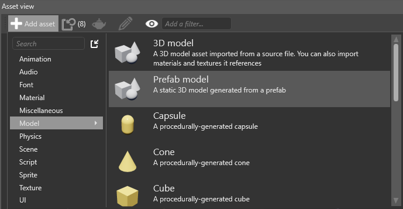
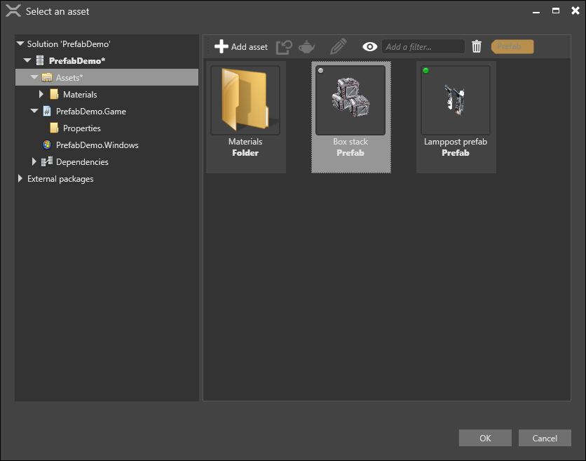
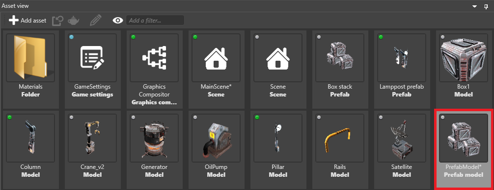

プレハブ モデル
初級 デザイナー
プレハブ モデルは、プレハブを単一の描画呼び出しに変換します。Stride はプレハブの個別のエンティティではなく最終的なモデルだけをレンダリングするので、これは最適化に役立ちます。プレハブを変更すると、プレハブ モデルが再生成されます。
欠点
プレハブ モデルはライト、コライダー、他のコンポーネントなどの要素を継承しません。単なるモデルであり、他のモデルと同じように使用する必要があります。たとえば、物理特性コンポーネントを含む 2 つのモデルで構成されるプレハブがある場合、プレハブ モデルは 2 つのモデルから単一のモデルを作成し、物理特性コンポーネントを無視します。プレハブ モデルにコンポーネントを追加する必要がある場合は、プレハブ モデル自体に追加します。
プレハブ モデルではマテリアルが公開されません。つまり、プレハブ モデル アセットまたはプレハブ モデルを使用するモデル コンポーネントでは、マテリアルを表示または編集できません。
プレハブ モデルを作成する
［Asset view］で［Add asset］>［Model］>［Prefab model］の順に選択します。

［Property grid］(既定では右側) で、［Prefab］の隣の
 (［Select asset］) をクリックします。
(［Select asset］) をクリックします。
［Select an asset］ウィンドウが開きます。

モデルを作成するプレハブを選択し、［OK］をクリックします。
プレハブ モデルが［Asset view］に追加されます。
